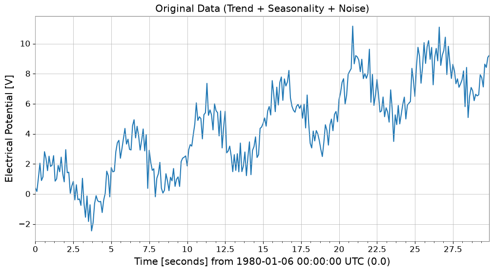
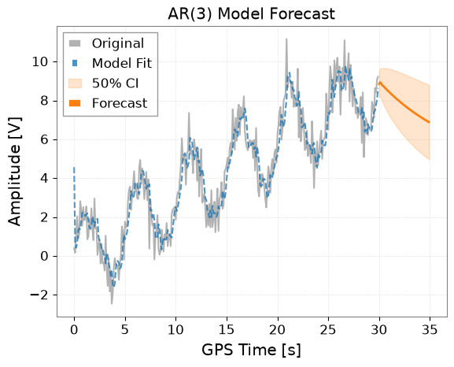
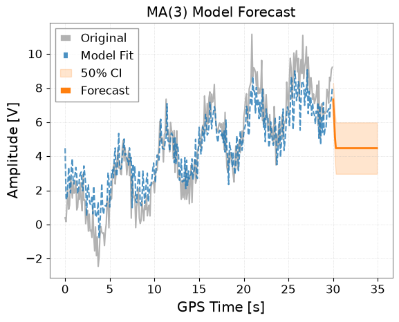
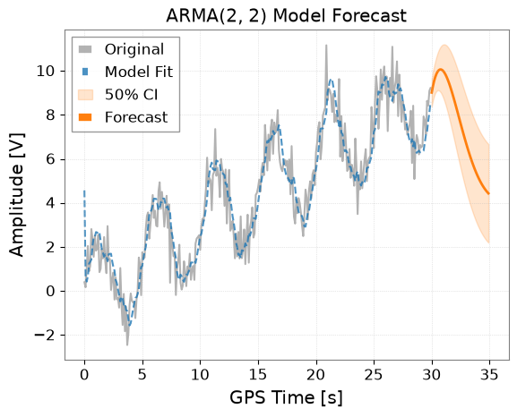
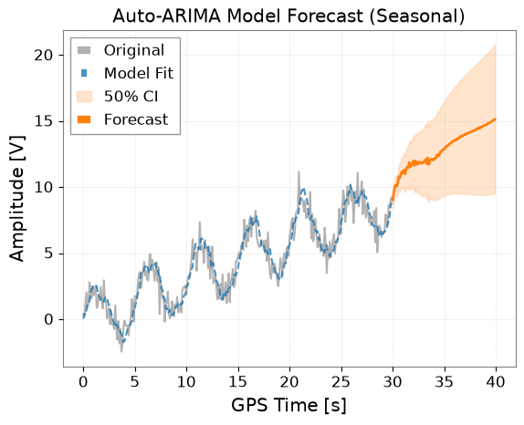
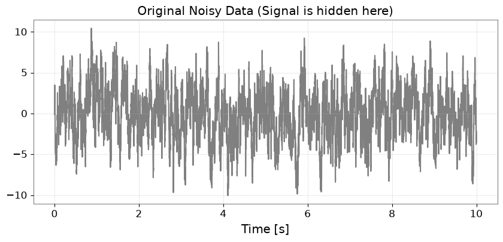
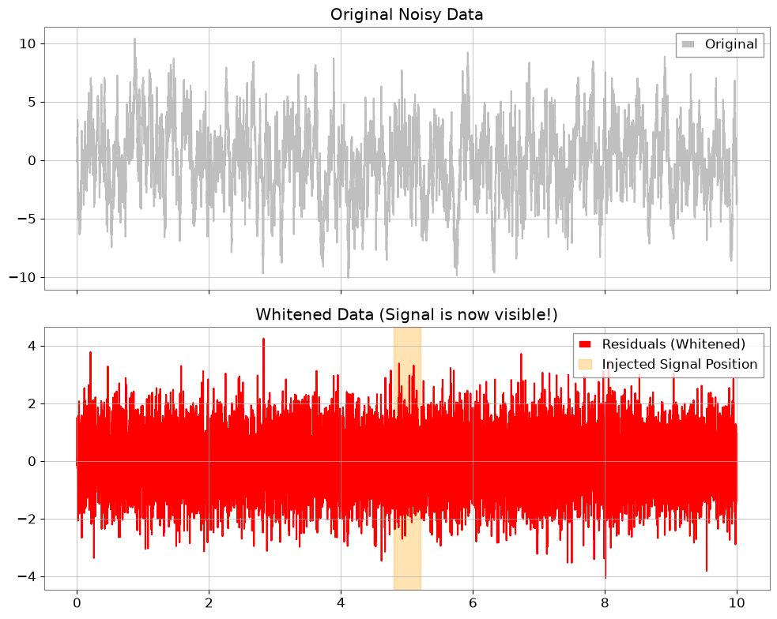
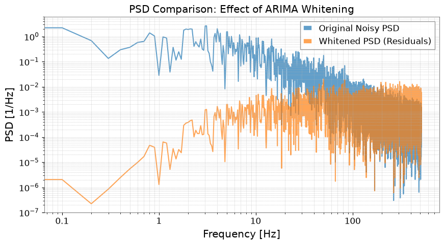

Note
このページは Jupyter Notebook から生成されました。 ノートブックをダウンロード (.ipynb)
[1]:
# Skipped in CI: Colab/bootstrap dependency install cell.
ARIMA: 時系列予測

このノートブックでは、gwexpy の TimeSeries クラスに追加された ARIMA 関連の機能（AR, MA, ARMA, ARIMA/SARIMAX）を使用して、時系列データのモデリングと未来予測を行う方法を解説します。
関連 API: Time Series API
関連理論: 検証済みアルゴリズム, 数値安定性
準備
必要なライブラリをインポートします。
[2]:
import warnings
import matplotlib.pyplot as plt
import numpy as np
import sklearn.utils.validation
# Monkeypatch for pmdarima compatibility with scikit-learn >= 1.6
_orig_check_array = sklearn.utils.validation.check_array
def _patched_check_array(*args, **kwargs):
kwargs.pop("force_all_finite", None)
return _orig_check_array(*args, **kwargs)
sklearn.utils.validation.check_array = _patched_check_array
warnings.filterwarnings(
"ignore", message=r".*force_all_finite.*", category=FutureWarning
)
warnings.filterwarnings("ignore", category=FutureWarning, module=r"sklearn\..*")
warnings.filterwarnings("ignore", category=FutureWarning, module=r"pmdarima\..*")
from gwexpy.timeseries import TimeSeries
サンプルデータの作成
ARIMAモデルの効果を確認するために、トレンド、季節性（周期性）、ノイズを含んだ模擬データを作成します。
[3]:
# Trend + Seasonality + Noise
t0 = 0
dt = 0.1
duration = 30
t = np.arange(0, duration, dt)
n_samples = len(t)
# 1. Linear Trend
trend = 0.3 * t
# 2. Periodic component (Sine)
seasonality = 2.0 * np.sin(2 * np.pi * 0.2 * t)
# 3. Noise
np.random.seed(42)
noise = np.random.normal(0, 0.8, n_samples)
data = trend + seasonality + noise
# Create TimeSeries object
ts = TimeSeries(data, t0=t0, dt=dt, unit="V", name="Sample Data")
ts.plot()
plt.title("Original Data (Trend + Seasonality + Noise)")
plt.show()

1. AR (AutoRegressive) モデル
ARモデルは、現在の値が過去の値に依存すると仮定するモデルです。 ts.ar(p) メソッドを使用します。p は次数です。
[4]:
# Fit with order p=3
model_ar = ts.ar(p=3)
# Display model summary
# print(model_ar.summary())
# Plot results
# forecast_steps specifies how many steps to forecast into the future
model_ar.plot(forecast_steps=50, alpha=0.5)
plt.title("AR(3) Model Forecast")
plt.show()

2. MA (Moving Average) モデル
MAモデルは、現在の値が過去の予測誤差（ホワイトノイズ）に依存すると仮定するモデルです。 ts.ma(q) メソッドを使用します。
[5]:
# Fit with order q=3
model_ma = ts.ma(q=3)
# Plot results
model_ma.plot(forecast_steps=50, alpha=0.5)
plt.title("MA(3) Model Forecast")
plt.show()

3. ARMA (AutoRegressive Moving Average) モデル
ARとMAを組み合わせたモデルです。 ts.arma(p, q) メソッドを使用します。
[6]:
# Fit with p=2, q=2
model_arma = ts.arma(p=2, q=2)
model_arma.plot(forecast_steps=50, alpha=0.5)
plt.title("ARMA(2, 2) Model Forecast")
plt.show()

4. ARIMA / Auto-ARIMA
ARIMAモデルは、差分を取ることで非定常性（トレンドなど）を除去し、ARMAモデルを適用します。
ts.arima() メソッドを使用します。 auto=True オプションを指定すると、pmdarima ライブラリを使用して最適なパラメータ (p, d, q) を自動的に探索します。これが最も推奨される方法です。
[7]:
try:
print("Searching for optimal ARIMA parameters... (this may take a few seconds)")
# Seasonality can also be considered
# m is the number of steps in a seasonal period
model_auto = ts.arima(auto=True, auto_kwargs={"seasonal": True, "m": 50})
# Show info of the optimal model found
print(model_auto.summary())
# Plot results (Forecasting for a longer period)
ax = model_auto.plot(forecast_steps=100, alpha=0.5)
plt.title("Auto-ARIMA Model Forecast (Seasonal)")
plt.show()
except ImportError as e:
print(f"Auto-ARIMA skipping: {e}")
Searching for optimal ARIMA parameters... (this may take a few seconds)
SARIMAX Results
===========================================================================================
Dep. Variable: y No. Observations: 300
Model: SARIMAX(1, 1, 2)x(1, 0, [], 50) Log Likelihood -404.141
Date: Wed, 29 Apr 2026 AIC 820.282
Time: 03:19:30 BIC 842.485
Sample: 0 HQIC 829.169
- 300
Covariance Type: opg
==============================================================================
coef std err z P>|z| [0.025 0.975]
------------------------------------------------------------------------------
intercept 0.0044 0.006 0.695 0.487 -0.008 0.017
ar.L1 0.8693 0.053 16.310 0.000 0.765 0.974
ma.L1 -1.6277 0.052 -31.464 0.000 -1.729 -1.526
ma.L2 0.7409 0.043 17.235 0.000 0.657 0.825
ar.S.L50 0.1604 0.071 2.263 0.024 0.021 0.299
sigma2 0.8667 0.070 12.431 0.000 0.730 1.003
===================================================================================
Ljung-Box (L1) (Q): 0.13 Jarque-Bera (JB): 0.69
Prob(Q): 0.71 Prob(JB): 0.71
Heteroskedasticity (H): 1.37 Skew: -0.10
Prob(H) (two-sided): 0.12 Kurtosis: 3.14
===================================================================================
Warnings:
[1] Covariance matrix calculated using the outer product of gradients (complex-step).

5. 予測データの取得
プロットだけでなく、.forecast() メソッドを使用して予測値の TimeSeries オブジェクトを直接取得できます。 これには信頼区間（Confidence Interval）も含まれます。
[8]:
if "model_auto" not in dir():
print("Auto-ARIMA model not available (pmdarima may be missing); skipping forecast.")
else:
steps = 50
# Get forecast values and confidence intervals
forecast_ts, intervals = model_auto.forecast(
steps=steps, alpha=0.5
) # 50% confidence interval
print("Forecast Data:")
print(forecast_ts)
print("\nConfidence Interval (Upper):")
print(intervals["upper"])
# Forecasting data can be saved or used for other analysis
# forecast_ts.write("forecast.h5")
Forecast Data:
TimeSeries([ 9.02063046, 9.60946522, 10.04247591, 10.15366674,
10.05259569, 10.38953303, 10.79815006, 10.71027604,
11.0066064 , 11.18205038, 11.08230306, 11.29882826,
10.98339548, 11.34916701, 11.51885444, 11.45195786,
11.87327169, 11.52378818, 11.68683396, 11.78939118,
11.98098138, 11.63015972, 11.97773199, 11.84042572,
11.72116026, 11.91254523, 11.88389858, 11.78617143,
11.8774418 , 11.82551831, 11.89783853, 11.97900098,
12.11132764, 11.76627937, 12.22001908, 11.72134264,
11.98239572, 12.11215673, 12.11237349, 12.04094848,
12.14349653, 12.16097877, 12.20711617, 12.45443106,
12.45771665, 12.39287855, 12.67000899, 12.66918209,
12.81103951, 12.86573192],
unit: V,
t0: 30.0 s,
dt: 0.1 s,
name: Sample Data_auto_forecast,
channel: None)
Confidence Interval (Upper):
TimeSeries([ 9.64857235, 10.25546616, 10.7195873 , 10.87455976,
10.82818454, 11.22844226, 11.70674993, 11.69299002,
12.06629242, 12.32035778, 12.29997091, 12.59592128,
12.3594855 , 12.80347063, 13.0503368 , 13.05941064,
13.55537161, 13.27914087, 13.51400676, 13.68693757,
13.94745905, 13.66414386, 14.07782484, 14.00526335,
13.9494172 , 14.20293743, 14.2351852 , 14.19715561,
14.34697078, 14.35248296, 14.48117257, 14.61767984,
14.80436716, 14.5127344 , 15.01898196, 14.57194163,
14.88379346, 15.06354868, 15.1129864 , 15.09003891,
15.24034942, 15.30490602, 15.39745534, 15.69054408,
15.73898862, 15.71871658, 16.0398411 , 16.08245619,
16.2672224 , 16.36430837],
unit: V,
t0: 30.0 s,
dt: 0.1 s,
name: upper_ci,
channel: None)
6. 重力波データ解析における応用: ARIMAによるノイズ除去 (Whitening)
重力波データ解析では、定常的な「有色ノイズ」の中から突発的なバースト信号やリングダウン波形を抽出するために、白色化 (Whitening) という処理が行われます。 ARIMAモデルを背景ノイズの予測モデルとして学習させ、実測値からその予測値を引く（残差をとる）ことで、ノイズを除去し信号を強調することが可能です。
Step 1: 有色ノイズの生成と信号の注入
まず、低周波成分が強い有色ノイズ（AR(1)プロセス）を作成し、そこにそのままでは判別しにくい微弱な信号（サインガウシアン）を埋め込みます。 ※単位には Astropy で認識可能な “strain” を使用します。
[9]:
import matplotlib.pyplot as plt
import numpy as np
from gwexpy.timeseries import TimeSeries
def generate_mock_data(duration=10, fs=1024):
t = np.linspace(0, duration, int(duration * fs))
# 1. Background Noise (AR(1) process with strong autocorrelation)
np.random.seed(42)
white_noise = np.random.normal(0, 1, len(t))
colored_noise = np.zeros_like(white_noise)
for i in range(1, len(t)):
colored_noise[i] = 0.95 * colored_noise[i - 1] + white_noise[i]
# 2. Injected Signal (Sine-Gaussian)
center_time = 5.0
sig_freq = 50.0
width = 0.1
signal = (
2.0
* np.exp(-((t - center_time) ** 2) / (2 * width**2))
* np.sin(2 * np.pi * sig_freq * t)
)
data = colored_noise + signal
# Use a standard unit string that astropy/gwpy can recognize
return TimeSeries(data, t0=0, dt=1 / fs, unit="strain", name="MockData")
ts = generate_mock_data()
plt.figure(figsize=(10, 4))
plt.plot(ts, color="gray")
plt.title("Original Noisy Data (Signal is hidden here)")
plt.xlabel("Time [s]")
plt.grid(True, linestyle=":")
plt.show()

Step 2: ARIMAによるノイズモデリング
auto=True を使って、背景ノイズの自己相関構造を表現する最適なモデルを探索します。
[10]:
print("Searching for optimal noise model parameters...")
# We prioritize AR model for whitening, so we set max_p=5 and max_q=0.
model = ts.arima(auto=True, max_p=5, max_q=0)
print(f"Best model order: {model.res.model.order}")
print(model.summary())
Searching for optimal noise model parameters...
Best model order: (5, 1, 0)
SARIMAX Results
==============================================================================
Dep. Variable: y No. Observations: 10240
Model: SARIMAX(5, 1, 0) Log Likelihood -14694.968
Date: Wed, 29 Apr 2026 AIC 29403.936
Time: 03:19:41 BIC 29454.574
Sample: 0 HQIC 29421.057
- 10240
Covariance Type: opg
==============================================================================
coef std err z P>|z| [0.025 0.975]
------------------------------------------------------------------------------
intercept -0.0003 0.010 -0.033 0.973 -0.020 0.019
ar.L1 -0.0379 0.010 -3.794 0.000 -0.057 -0.018
ar.L2 -0.0413 0.010 -4.150 0.000 -0.061 -0.022
ar.L3 -0.0271 0.010 -2.692 0.007 -0.047 -0.007
ar.L4 -0.0303 0.010 -3.078 0.002 -0.050 -0.011
ar.L5 -0.0216 0.010 -2.195 0.028 -0.041 -0.002
sigma2 1.0330 0.014 72.089 0.000 1.005 1.061
===================================================================================
Ljung-Box (L1) (Q): 0.01 Jarque-Bera (JB): 0.54
Prob(Q): 0.94 Prob(JB): 0.76
Heteroskedasticity (H): 1.03 Skew: 0.01
Prob(H) (two-sided): 0.35 Kurtosis: 3.03
===================================================================================
Warnings:
[1] Covariance matrix calculated using the outer product of gradients (complex-step).
Step 3: 残差（Residuals）の抽出と可視化
モデルが予測した「定常ノイズ」を引くことで、残差 \(x_r = x - \hat{x}\) を求めます。これが白色化されたデータとなります。
[11]:
ts_whitened = model.residuals()
ts_whitened.name = "Whitened Data"
fig, ax = plt.subplots(2, 1, figsize=(10, 8), sharex=True)
ax[0].plot(ts, color="gray", alpha=0.5, label="Original")
ax[0].set_title("Original Noisy Data")
ax[0].legend(loc="upper right")
ax[1].plot(ts_whitened, color="red", label="Residuals (Whitened)")
ax[1].set_title("Whitened Data (Signal is now visible!)")
ax[1].axvspan(4.8, 5.2, color="orange", alpha=0.3, label="Injected Signal Position")
ax[1].legend(loc="upper right")
plt.tight_layout()
plt.show()

Step 4: 周波数領域での評価
パワースペクトル密度 (PSD) を計算して比較します。
[12]:
fft_original = ts.psd()
fft_whitened = ts_whitened.psd()
plt.figure(figsize=(10, 5))
plt.loglog(
fft_original.frequencies.value,
fft_original.value,
label="Original Noisy PSD",
alpha=0.7,
)
plt.loglog(
fft_whitened.frequencies.value,
fft_whitened.value,
label="Whitened PSD (Residuals)",
alpha=0.7,
)
plt.title("PSD Comparison: Effect of ARIMA Whitening")
plt.xlabel("Frequency [Hz]")
plt.ylabel("PSD [1/Hz]")
plt.legend()
plt.grid(True, which="both", linestyle=":")
plt.show()

まとめ
model.residuals()を用いることで、複雑な数式を書かずに簡単に白色化処理が実行できます。この手法は、重力波解析におけるバースト信号の探索や、イベント直後のリングダウン波形（指数減衰する正弦波）の抽出に非常に強力です。
関連 API: Time Series API
関連理論: 検証済みアルゴリズム, 数値安定性